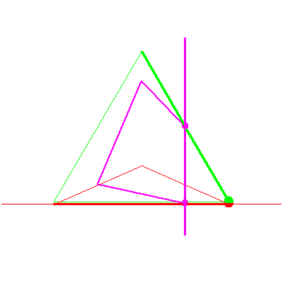
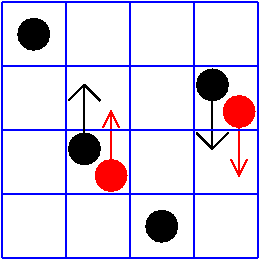

The line lying in a fixed plane in P3


The line lying in a fixed plane in P3 |
|
|  |
In the fifth stage of the specialization sequence, the moving line rotates about the point, and so nothing happens to the solution line. However, this is case (yes,yes) of Table 2/Figure 8 of GLR, and a lot happend to the red checkers. |
|  |